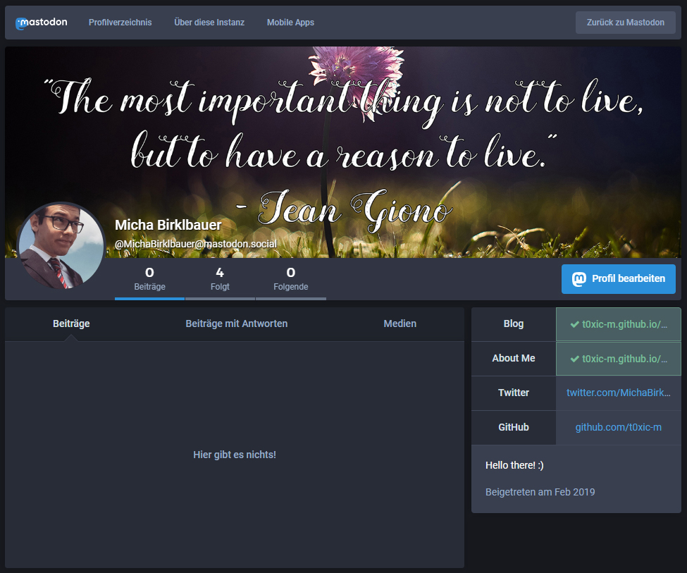

Mastodon is an open-source, decentralized, federated social network that incorporates a twitter-like user interface. If you want to read more about what exactly that means, I would recommend you to read the docs. More importantly it is a social network where users are back in control, a social network that is owned by the community and not by one big company and a social network that is completely ad-free.
 Screenshot of my Profile on Mastodon
Although I am quite late to the party - considering Mastodon launched at the end of 2016 - I still finally made it and you can find me at @MichaBirklbauer.
Hope to see you soon!
JOIN THE FEDERATION: https://joinmastodon.org/ or join me on mastodon.social